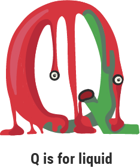

Research shows people who have trouble with learning to read, dyslexia, speaking disorders and a general fear
for the unknown are more inclined to suffer from Ablitteraphobia. To prevent the fear we can emphasize on good
reading skills and foresee adequate guidance to those with a predisposition. On this page you can read about
a couple of therapies

Behavioral therapy
This kind of therapy focuses on confronting the patient with the fear. During sessions the therapist and patient actively communicate with the
letter Q (and P if necessary). The therapist will make the patient read and speak words and texts with Q's. They will go to places
associated with the letter Q to conquer the biggest anxiety.
Diffusing method
There is an app or plugin that you can install on your computer and smartphone. It is called the Letter Diffuser. In a tekst,
this program will make the fearesome letter lighter and woozy. Sufferers will see that it's there, but it is less harsh. Our brain
doesn't need all the letters to be able to read a word or tekst. So the patient isn't bothered by it.
Listening therapy
Another way to deal with the phobia is with audio sessions. People can go to live sessions or listen to podcasts on their own.
These sessions consist of audio stories told in a very soothing way. A lot of Q-words are used in these tales. The positive storyline and
the soothing voice of the storyteller help the patient make new positive associations with the letter.